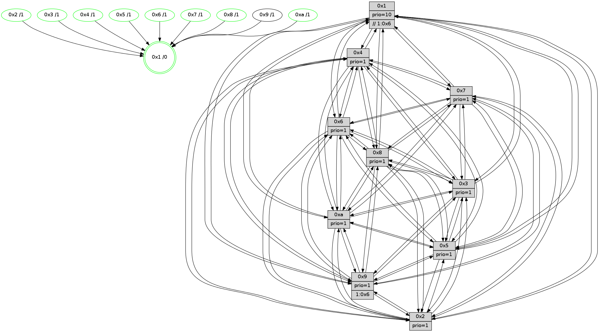

>> << IDX [start] -100 -25 -5 +0 +5 +25 +100 [1155.04045796]
 Previous packets
----------------------------------------------------------------------
1150.311674 beacon01(faad) #0 coord=01,02,03,04,05,06,07,0a,09,08 cycle=688.0ms assoc
-- color-indic=1 64 57 c9
1150.321656 beacon02(faad) #0 coord=01,02,03,04,05,06,07,0a,09,08 cycle=688.0ms assoc 64 c4 f8
1150.331657 beacon03(faad) #0 coord=01,02,03,04,05,06,07,0a,09,08 cycle=688.0ms assoc 64 be b5
1150.341657 beacon04(faad) #0 coord=01,02,03,04,05,06,07,0a,09,08 cycle=688.0ms assoc 64 c9 5f
1150.351656 beacon05(faad) #0 coord=01,02,03,04,05,06,07,0a,09,08 cycle=688.0ms assoc 64 b3 12
1150.361658 beacon06(faad) #0 coord=01,02,03,04,05,06,07,0a,09,08 cycle=688.0ms assoc 64 3d c5
1150.371657 beacon07(faad) #0 coord=01,02,03,04,05,06,07,0a,09,08 cycle=688.0ms assoc 64 47 88
1150.381663 beacon0a(faad) #0 coord=01,02,03,04,05,06,07,0a,09,08 cycle=688.0ms assoc 64 36 83
1150.391663 beacon09(faad) #0 coord=01,02,03,04,05,06,07,0a,09,08 cycle=688.0ms assoc 64 b8 54
1150.401662 beacon08(faad) #0 coord=01,02,03,04,05,06,07,0a,09,08 cycle=688.0ms assoc 64 c2 19
1150.413462 [Hello(9): seq=678 sym=2,5,3,4,7,6,8,10,1 sysInfo=hasWarning stat=2:15,13,10,8/5:8,1,9,5/3:2,6,0,15/4:1,0,0,0/7:8,7,2,1/6:15,3,7,11/8:5,11,13,3/10:11,4,1,4/1:1,13,12,1]
1150.416829 [Color(5) seq=328 @0:0 prio=1]
1150.418097 [Hello(4): seq=734 sym=5,7,6,2,3,9,8,10,1 sysInfo= stat=5:6,3,14,15/7:9,7,3,1/6:11,9,0,12/2:12,13,9,14/3:7,5,0,11/9:12,13,5,11/8:12,0,15,6/10:11,3,9,13/1:12,15,12,1]
1150.421480 [Hello(10): seq=667 sym=6,2,3,8,7,5,9,4,1 sysInfo=hasWarning stat=6:11,8,2,6/2:10,1,2,10/3:9,14,6,11/8:0,12,9,2/7:13,14,1,6/5:3,1,12,14/9:4,15,2,2/4:8,0,2,0/1:3,1,6,1]
1150.425845 [Color(8) seq=333 @0:0 prio=1]
1150.428078 [Color(4) seq=291 @0:0 prio=1]
1150.430841 [Hello(7): seq=734 sym=2,3,5,6,4,8,9,10,1 sysInfo=hasWarning stat=2:2,4,9,1/3:5,11,8,15/5:8,6,4,1/6:3,15,5,9/4:2,13,4,1/8:11,5,12,1/9:3,1,8,1/10:15,2,10,5/1:4,8,11,0]
1150.435096 [Color(1) seq=415 @0:0 prio=10 >>1.@6,1.@7,1.@8]
1150.436678 [Color(7) seq=280 @0:0 prio=1]
----------------------------------------------------------------------
1151.099804 beacon01(faad) #0 coord=01,02,03,04,05,06,07,0a,09,08 cycle=688.0ms assoc
-- color-indic=1 64 93 c7
1151.109786 beacon02(faad) #0 coord=01,02,03,04,05,06,07,0a,09,08 cycle=688.0ms assoc 64 00 f6
1151.119786 beacon03(faad) #0 coord=01,02,03,04,05,06,07,0a,09,08 cycle=688.0ms assoc 64 7a bb
1151.129785 beacon04(faad) #0 coord=01,02,03,04,05,06,07,0a,09,08 cycle=688.0ms assoc 64 0d 51
1151.139787 beacon05(faad) #0 coord=01,02,03,04,05,06,07,0a,09,08 cycle=688.0ms assoc 64 77 1c
1151.149786 beacon06(faad) #0 coord=01,02,03,04,05,06,07,0a,09,08 cycle=688.0ms assoc 64 f9 cb
1151.159787 beacon07(faad) #0 coord=01,02,03,04,05,06,07,0a,09,08 cycle=688.0ms assoc 64 83 86
1151.169793 beacon0a(faad) #0 coord=01,02,03,04,05,06,07,0a,09,08 cycle=688.0ms assoc 64 f2 8d
1151.179792 beacon09(faad) #0 coord=01,02,03,04,05,06,07,0a,09,08 cycle=688.0ms assoc 64 7c 5a
1151.189793 beacon08(faad) #0 coord=01,02,03,04,05,06,07,0a,09,08 cycle=688.0ms assoc 64 06 17
1151.201027 [Hello(5): seq=735 sym=7,6,4,3,1,9,8,10,2 sysInfo=hasWarning stat=7:11,4,6,13/6:10,10,8,2/4:11,13,14,13/3:12,6,14,13/1:5,15,15,1/9:13,0,0,9/8:8,8,9,2/10:0,5,13,8/2:8,8,15,6]
1151.204997 [Hello(1): seq=644 sym=4,2,9,5,10,3,8,6,7 sysInfo=coloring-mode-on,ColoringModeRequestCalled stat=4:1,11,1,5/2:0,15,3,2/9:14,2,2,7/5:14,15,10,7/10:7,8,8,6/3:2,1,12,6/8:15,8,12,3/6:0,4,4,13/7:0,11,15,14]
1151.208265 [Hello(2): seq=731 sym=4,5,7,6,3,9,8,10,1 sysInfo=hasWarning stat=4:7,12,4,11/5:5,13,10,0/7:1,8,5,14/6:3,8,12,11/3:10,4,11,8/9:1,8,13,6/8:12,12,4,11/10:12,2,1,10/1:9,4,8,0]
1151.210964 [Color(10) seq=324 @0:0 prio=1]
1151.214086 [Color(2) seq=311 @0:0 prio=1]
1151.218859 [Hello(6): seq=735 sym=2,3,5,4,7,9,8,10,1 sysInfo=hasWarning stat=2:10,15,2,7/3:9,15,14,11/5:14,3,15,1/4:12,3,9,5/7:14,10,4,12/9:0,0,3,7/8:0,14,14,5/10:8,15,4,12/1:9,13,12,1]
1151.221694 [Hello(3): seq=735 sym=1,7,6,2,4,8,9,10,5 sysInfo=hasWarning stat=1:2,10,9,0/7:0,11,12,12/6:3,7,1,0/2:1,3,1,0/4:12,10,15,11/8:12,7,9,4/9:11,8,2,13/10:2,3,12,4/5:0,1,6,15]
1151.226754 [Color(3) seq=364 @0:0 prio=1]
1151.230407 [Color(6) seq=367 @0:0 prio=1]
----------------------------------------------------------------------
1151.887936 beacon01(faad) #0 coord=01,02,03,04,05,06,07,0a,09,08 cycle=688.0ms assoc
-- color-indic=1 64 2f c2
1151.897918 beacon02(faad) #0 coord=01,02,03,04,05,06,07,0a,09,08 cycle=688.0ms assoc 64 bc f3
1151.907919 beacon03(faad) #0 coord=01,02,03,04,05,06,07,0a,09,08 cycle=688.0ms assoc 64 c6 be
1151.917919 beacon04(faad) #0 coord=01,02,03,04,05,06,07,0a,09,08 cycle=688.0ms assoc 64 b1 54
1151.927918 beacon05(faad) #0 coord=01,02,03,04,05,06,07,0a,09,08 cycle=688.0ms assoc 64 cb 19
1151.937919 beacon06(faad) #0 coord=01,02,03,04,05,06,07,0a,09,08 cycle=688.0ms assoc 64 45 ce
1151.947920 beacon07(faad) #0 coord=01,02,03,04,05,06,07,0a,09,08 cycle=688.0ms assoc 64 3f 83
1151.957924 beacon0a(faad) #0 coord=01,02,03,04,05,06,07,0a,09,08 cycle=688.0ms assoc 64 4e 88
1151.967926 beacon09(faad) #0 coord=01,02,03,04,05,06,07,0a,09,08 cycle=688.0ms assoc 64 c0 5f
1151.977926 beacon08(faad) #0 coord=01,02,03,04,05,06,07,0a,09,08 cycle=688.0ms assoc 64 ba 12
1151.989421 [Hello(9): seq=679 sym=2,5,3,4,7,6,8,10,1 asym= sysInfo=hasWarning stat=2:0,14,10,8/5:9,2,9,5/3:3,7,0,15/4:2,1,0,0/7:9,8,2,1/6:0,4,7,11/8:6,12,13,3/10:11,5,1,4/1:2,14,12,1]
1151.992141 [Color(5) seq=329 @0:0 prio=1]
1151.993721 [Hello(8): seq=679 sym=5,2,3,4,9,6,7,10,1 sysInfo=hasWarning stat=5:1,13,3,0/2:12,11,0,10/3:5,0,4,15/4:10,0,7,10/9:13,7,7,3/6:3,13,2,13/7:10,9,2,0/10:13,5,9,4/1:5,10,11,0]
1151.998160 [Color(8) seq=334 @0:0 prio=1]
1151.999759 [Hello(10): seq=668 sym=6,2,3,8,7,5,9,4,1 sysInfo=hasWarning stat=6:12,9,2,6/2:10,2,2,10/3:10,15,6,11/8:0,13,9,2/7:14,15,1,6/5:4,1,12,14/9:4,15,2,2/4:8,1,2,0/1:3,2,6,1]
1152.005361 [Hello(7): seq=735 sym=2,3,5,6,4,8,9,10,1 sysInfo=hasWarning stat=2:3,5,9,1/3:6,12,8,15/5:9,6,4,1/6:4,0,5,9/4:2,13,4,1/8:11,5,12,1/9:4,1,8,1/10:15,3,10,5/1:5,8,11,0]
1152.009474 [Color(7) seq=281 @0:0 prio=1]
1152.011545 [Hello(4): seq=735 sym=5,7,6,2,3,9,8,10,1 sysInfo= stat=5:7,3,14,15/7:10,8,3,1/6:12,10,0,12/2:13,14,9,14/3:8,6,0,11/9:13,13,5,11/8:12,0,15,6/10:11,4,9,13/1:13,0,12,1]
1152.014602 [STC(1) #0.177 tree-change,inconsistent-stability,stable,to-color d=0]
1152.016249 [Color(1) seq=416 @0:0 prio=10 >>1.@6,1.@7,1.@8]
1152.020083 [Color(4) seq=292 @0:0 prio=1]
----------------------------------------------------------------------
1152.676065 beacon01(faad) #0 coord=01,02,03,04,05,06,07,0a,09,08 cycle=688.0ms assoc
-- color-indic=1 64 fb f7
1152.686048 beacon02(faad) #0 coord=01,02,03,04,05,06,07,0a,09,08 cycle=688.0ms assoc 64 68 c6
1152.696050 beacon03(faad) #0 coord=01,02,03,04,05,06,07,0a,09,08 cycle=688.0ms assoc 64 12 8b
1152.706049 beacon04(faad) #0 coord=01,02,03,04,05,06,07,0a,09,08 cycle=688.0ms assoc 64 65 61
1152.716048 beacon05(faad) #0 coord=01,02,03,04,05,06,07,0a,09,08 cycle=688.0ms assoc 64 1f 2c
1152.726049 beacon06(faad) #0 coord=01,02,03,04,05,06,07,0a,09,08 cycle=688.0ms assoc 64 91 fb
1152.736048 beacon07(faad) #0 coord=01,02,03,04,05,06,07,0a,09,08 cycle=688.0ms assoc 64 eb b6
1152.746054 beacon0a(faad) #0 coord=01,02,03,04,05,06,07,0a,09,08 cycle=688.0ms assoc 64 9a bd
1152.756053 beacon09(faad) #0 coord=01,02,03,04,05,06,07,0a,09,08 cycle=688.0ms assoc 64 14 6a
1152.766053 beacon08(faad) #0 coord=01,02,03,04,05,06,07,0a,09,08 cycle=688.0ms assoc 64 6e 27
1152.777620 [STC(9)->1 #0.177 tree-change,inconsistent-stability,to-color d=1]
1152.779586 [Hello(5): seq=736 sym=7,6,4,3,1,9,8,10,2 sysInfo=hasWarning stat=7:12,5,6,13/6:11,11,8,2/4:12,14,14,13/3:13,7,14,13/1:6,0,0,1/9:14,0,0,9/8:9,9,9,2/10:1,6,13,8/2:9,9,15,6]
1152.782311 [Hello(2): seq=732 sym=4,5,7,6,3,9,8,10,1 sysInfo=hasWarning stat=4:8,13,4,11/5:6,14,10,0/7:2,9,5,14/6:4,9,12,11/3:11,5,11,8/9:2,8,13,6/8:13,13,4,11/10:13,2,1,10/1:9,5,9,0]
1152.784994 [Hello(6): seq=736 sym=2,3,5,4,7,9,8,10,1 sysInfo=hasWarning stat=2:10,15,2,7/3:9,15,14,11/5:15,4,15,1/4:13,4,9,5/7:15,11,4,12/9:1,0,3,7/8:1,15,14,5/10:9,15,4,12/1:10,14,13,1]
1152.788165 [STC(7)->1 #0.177 tree-change,inconsistent-stability,stable,to-color d=1]
1152.789408 [Hello(1): seq=645 sym=4,2,9,5,10,3,8,6,7 sysInfo=coloring-mode-on,ColoringModeRequestCalled stat=4:1,12,1,5/2:1,0,3,2/9:15,2,2,7/5:14,0,10,7/10:7,9,8,6/3:3,2,12,6/8:15,8,12,3/6:1,5,4,13/7:0,11,15,14]
1152.792165 [STC(10)->1 #0.177 tree-change,inconsistent-stability,stable,to-color d=1]
1152.793848 [STC(6)->1 #0.177 tree-change,inconsistent-stability,stable,to-color d=1]
1152.795718 [Color(10) seq=325 @0:0 prio=1]
1152.797566 [Hello(3): seq=736 sym=1,7,6,2,4,8,9,10,5 sysInfo=hasWarning stat=1:2,11,10,0/7:1,12,12,12/6:3,8,1,0/2:1,3,1,0/4:13,11,15,11/8:13,8,9,4/9:12,8,2,13/10:3,3,12,4/5:1,2,6,15]
1152.800407 [STC(3)->1 #0.177 tree-change,inconsistent-stability,stable,to-color d=1]
1152.802833 [STC(8)->1 #0.177 tree-change,inconsistent-stability,stable,to-color d=1]
1152.804106 [Color(3) seq=365 @0:0 prio=1]
1152.807789 [STC(2)->1 #0.177 tree-change,inconsistent-stability,stable,to-color d=1]
1152.810404 [Color(2) seq=312 @0:0 prio=1]
1152.813819 [Color(6) seq=368 @0:0 prio=1]
----------------------------------------------------------------------
1153.464196 beacon01(faad) #0 coord=01,02,03,04,05,06,07,0a,09,08 cycle=688.0ms assoc
-- color-indic=1 64 47 f2
1153.474178 beacon02(faad) #0 coord=01,02,03,04,05,06,07,0a,09,08 cycle=688.0ms assoc 64 d4 c3
1153.484178 beacon03(faad) #0 coord=01,02,03,04,05,06,07,0a,09,08 cycle=688.0ms assoc 64 ae 8e
1153.494178 beacon04(faad) #0 coord=01,02,03,04,05,06,07,0a,09,08 cycle=688.0ms assoc 64 d9 64
1153.504178 beacon05(faad) #0 coord=01,02,03,04,05,06,07,0a,09,08 cycle=688.0ms assoc 64 a3 29
1153.514179 beacon06(faad) #0 coord=01,02,03,04,05,06,07,0a,09,08 cycle=688.0ms assoc 64 2d fe
1153.524179 beacon07(faad) #0 coord=01,02,03,04,05,06,07,0a,09,08 cycle=688.0ms assoc 64 57 b3
1153.534183 beacon0a(faad) #0 coord=01,02,03,04,05,06,07,0a,09,08 cycle=688.0ms assoc 64 26 b8
1153.544183 beacon09(faad) #0 coord=01,02,03,04,05,06,07,0a,09,08 cycle=688.0ms assoc 64 a8 6f
1153.554184 beacon08(faad) #0 coord=01,02,03,04,05,06,07,0a,09,08 cycle=688.0ms assoc 64 d2 22
1153.565982 [Hello(9): seq=680 sym=2,5,3,4,7,6,8,10,1 sysInfo=hasWarning stat=2:1,15,11,8/5:10,3,10,5/3:4,8,1,15/4:3,2,0,0/7:10,9,2,1/6:1,5,8,11/8:7,13,14,3/10:12,6,2,4/1:3,15,13,1]
1153.568876 [Hello(10): seq=669 sym=6,2,3,8,7,5,9,4,1 sysInfo=hasWarning stat=6:12,10,2,6/2:10,3,3,10/3:11,0,7,11/8:0,13,10,2/7:15,0,1,6/5:5,1,12,14/9:4,15,3,2/4:9,2,2,0/1:3,3,7,1]
1153.571852 [Hello(4): seq=736 sym=5,7,6,2,3,9,8,10,1 sysInfo= stat=5:8,3,14,15/7:10,8,3,1/6:13,11,1,12/2:14,15,10,14/3:9,7,1,11/9:14,13,6,11/8:12,0,0,6/10:11,5,10,13/1:14,0,12,1]
1153.574411 [Color(5) seq=330 @0:0 prio=1]
1153.576910 [Color(4) seq=293 @0:0 prio=1]
1153.581761 [Hello(8): seq=680 sym=5,2,3,4,9,6,7,10,1 sysInfo=hasWarning stat=5:1,13,3,0/2:12,12,1,10/3:5,1,4,15/4:11,1,7,10/9:14,7,7,3/6:3,14,2,13/7:11,10,2,0/10:14,5,9,4/1:5,11,12,0]
1153.584216 [Hello(7): seq=736 sym=2,3,5,6,4,8,9,10,1 sysInfo=hasWarning stat=2:3,6,10,1/3:7,13,9,15/5:9,7,4,1/6:4,1,6,9/4:3,14,4,1/8:11,5,13,1/9:5,1,8,1/10:15,4,11,5/1:6,9,12,0]
1153.586946 [Color(8) seq=335 @0:0 prio=1]
1153.588959 [Color(7) seq=282 @0:0 prio=1]
----------------------------------------------------------------------
1154.252327 beacon01(faad) #0 coord=01,02,03,04,05,06,07,0a,09,08 cycle=688.0ms assoc
-- color-indic=1 64 83 fc
1154.262309 beacon02(faad) #0 coord=01,02,03,04,05,06,07,0a,09,08 cycle=688.0ms assoc 64 10 cd
1154.272309 beacon03(faad) #0 coord=01,02,03,04,05,06,07,0a,09,08 cycle=688.0ms assoc 64 6a 80
1154.282310 beacon04(faad) #0 coord=01,02,03,04,05,06,07,0a,09,08 cycle=688.0ms assoc 64 1d 6a
1154.292310 beacon05(faad) #0 coord=01,02,03,04,05,06,07,0a,09,08 cycle=688.0ms assoc 64 67 27
1154.302310 beacon06(faad) #0 coord=01,02,03,04,05,06,07,0a,09,08 cycle=688.0ms assoc 64 e9 f0
1154.312312 beacon07(faad) #0 coord=01,02,03,04,05,06,07,0a,09,08 cycle=688.0ms assoc 64 93 bd
1154.322315 beacon0a(faad) #0 coord=01,02,03,04,05,06,07,0a,09,08 cycle=688.0ms assoc 64 e2 b6
1154.332315 beacon09(faad) #0 coord=01,02,03,04,05,06,07,0a,09,08 cycle=688.0ms assoc 64 6c 61
1154.342316 beacon08(faad) #0 coord=01,02,03,04,05,06,07,0a,09,08 cycle=688.0ms assoc 64 16 2c
1154.353543 [Hello(5): seq=737 sym=7,6,4,3,1,9,8,10,2 sysInfo=hasWarning stat=7:13,6,6,13/6:11,12,9,2/4:12,15,14,13/3:14,8,15,13/1:7,0,0,1/9:15,0,0,9/8:10,10,10,2/10:1,7,14,8/2:9,10,0,6]
1154.357576 [Color(10) seq=326 @0:0 prio=1]
1154.358866 [Hello(6): seq=737 sym=2,3,5,4,7,9,8,10,1 sysInfo=hasWarning stat=2:10,15,2,7/3:9,15,14,11/5:0,5,15,1/4:14,5,9,5/7:0,12,4,12/9:2,0,4,7/8:2,0,14,5/10:10,15,4,12/1:10,14,13,1]
1154.361437 [Hello(2): seq=733 sym=4,5,7,6,3,9,8,10,1 sysInfo=hasWarning stat=4:9,14,4,11/5:7,14,10,0/7:3,10,5,14/6:4,10,12,11/3:11,5,11,8/9:3,8,14,6/8:14,14,4,11/10:14,2,1,10/1:9,5,9,0]
1154.363916 [Color(6) seq=369 @0:0 prio=1]
1154.368532 [Color(2) seq=313 @0:0 prio=1]
1154.372118 [Hello(3): seq=737 sym=1,7,6,2,4,8,9,10,5 sysInfo=hasWarning stat=1:2,12,10,0/7:2,13,12,12/6:3,9,1,0/2:1,4,2,0/4:14,12,15,11/8:14,9,9,4/9:13,8,3,13/10:4,3,12,4/5:2,2,6,15]
1154.374950 [Color(3) seq=366 @0:0 prio=1]